class: center, middle # Lecture 4: ## Going deeper .grid[ .kol-6-12[ Marc Lelarge<sup>*</sup> <br/> .red[Andrei Bursuc] <br/> Alexandre Defossez ] .kol-6-12[ Alexandre Sablayrolles <br/> Pierre Stock <br/> Neil Zeghidour ] ] .red[*] contact in case of emergency... --- # Outline - Universal approximation theorem - Why going deeper? - Regularization in deep networks + classic regularization: $L\_2$ regularization + implicit regularization: Dropout, Batch Normalization - Residual networks --- class: center, middle # Going deeper --- # Universal function approximation .bold[Theorem.] ( Hornik et al, 1991) Let $\sigma$ be a nonconstant, bounded, and monotonically-increasing continuous function. For any $f \in C([0, 1]^{d})$ and $\varepsilon > 0$, there exists $h \in \mathbb{N}$ real constants $v\_i, b\_i \in \mathbb{R}$ and real vectors $w_i \in \mathbb{R}^d$ such that: $$ | \sum\_i^h v\_i \sigma(w\_i^Tx + b\_i) - f (x) | < \varepsilon $$ that is: neural nets are dense in $C([0, 1]^{d})$. - It guarantees that even a single hidden-layer network can represent any classification problem in which the boundary is locally linear (smooth); - It does not inform about good/bad architectures, nor how they relate to the optimization procedure. - The universal approximation theorem generalizes to any non-polynomial (possibly unbounded) activation function, including the ReLU (Leshno, 1993). .citation[K. Hornik et al., Approximation Capabilities of Multilayer Feedforward Networks, 1991] --- .bold[Theorem] (Barron, 1992) The mean integrated square error between the estimated network $\hat{F}$ and the target function $f$ is bounded by $$O\left(\frac{C^2\_f}{q} + \frac{qp}{N}\log N\right)$$ where $N$ is the number of training points, $q$ is the number of neurons, $p$ is the input dimension, and $C\_f$ measures the global smoothness of $f$. Provided enough data, it guarantees that adding more neurons will result in a better approximation. .credit[Slide credit: G. Louppe, INFO8004-1 Advanced Machine Learning] --- # Problem solved? UFA theorems **do not tell us**: - The number $h$ of hidden units is small enough to have the network fit in RAM. - The optimal function parameters can be found in finite time by minimizing the Empirical Risk with SGD and the usual random initialization schemes. --- # Approximation with ReLU nets .left-column[ ```python import numpy as np import matplotlib.pyplot as plt def relu(x): return np.maximum(x, 0) def rect(x, a, b, h, eps=1e-7): return h / eps * ( relu(x - a) - relu(x - (a + eps)) - relu(x - b) + relu(x - (b + eps))) x = np.linspace(-3, 3, 1000) *y = ( rect(x, -1, 0, 0.4)) plt.plot(x, y) ``` ] .right-column[ 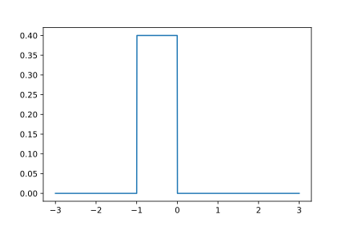 ] .reset-columns[ ] .citation[Conner Davis, [Quora: Is a single layered ReLU network still a universal approximator?](https://www.quora.com/Is-a-single-layered-ReLu-network-still-a-universal-approximator)] --- # Approximation with ReLU nets .left-column[ ```python import numpy as np import matplotlib.pyplot as plt def relu(x): return np.maximum(x, 0) def rect(x, a, b, h, eps=1e-7): return h / eps * ( relu(x - a) - relu(x - (a + eps)) - relu(x - b) + relu(x - (b + eps))) x = np.linspace(-3, 3, 1000) *y = ( rect(x, -1, 0, 0.4) * + rect(x, 0, 1, 1.3) * + rect(x, 1, 2, 0.8)) plt.plot(x, y) ``` ] .right-column[ 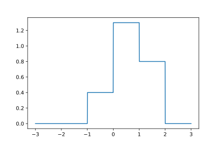 ] .reset-columns[ ] .citation[Conner Davis, [Quora: Is a single layered ReLU network still a universal approximator?](https://www.quora.com/Is-a-single-layered-ReLu-network-still-a-universal-approximator)] --- # Approximation with ReLU nets .left-column[ ```python import numpy as np import matplotlib.pyplot as plt def relu(x): return np.maximum(x, 0) def rect(x, a, b, h, eps=1e-7): return h / eps * ( relu(x - a) - relu(x - (a + eps)) - relu(x - b) + relu(x - (b + eps))) *x = np.arange(0,5,0.05) # 10 z = np.arange(0,5,0.001) sin_approx = np.zeros_like(z) *for i in range(2, x.size-1): * sin_approx = sin_approx + rect(z,(x[i]+x[i-1])/2, * (x[i]+x[i+1])/2, np.sin(x[i]), 1e-7) plt.plot(x, y) ``` ] .right-column[ 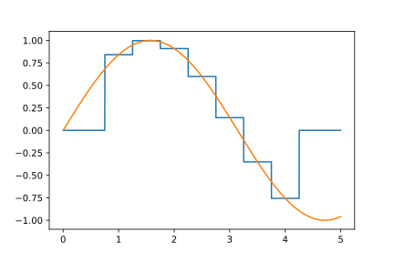 ] .reset-columns[ ] .citation[Conner Davis, [Quora: Is a single layered ReLU network still a universal approximator?](https://www.quora.com/Is-a-single-layered-ReLu-network-still-a-universal-approximator)] --- # Approximation with ReLU nets .left-column[ ```python import numpy as np import matplotlib.pyplot as plt def relu(x): return np.maximum(x, 0) def rect(x, a, b, h, eps=1e-7): return h / eps * ( relu(x - a) - relu(x - (a + eps)) - relu(x - b) + relu(x - (b + eps))) *x = np.arange(0,5,0.25) # 20 z = np.arange(0,5,0.001) sin_approx = np.zeros_like(z) *for i in range(2, x.size-1): * sin_approx = sin_approx + rect(z,(x[i]+x[i-1])/2, * (x[i]+x[i+1])/2, np.sin(x[i]), 1e-7) plt.plot(x, y) ``` ] .right-column[ <img src="images/part4/many_rectangles_3.svg" width="100%" /> ] .reset-columns[ ] .citation[Conner Davis, [Quora: Is a single layered ReLU network still a universal approximator?](https://www.quora.com/Is-a-single-layered-ReLu-network-still-a-universal-approximator)] --- # Approximation with ReLU nets .left-column[ ```python import numpy as np import matplotlib.pyplot as plt def relu(x): return np.maximum(x, 0) def rect(x, a, b, h, eps=1e-7): return h / eps * ( relu(x - a) - relu(x - (a + eps)) - relu(x - b) + relu(x - (b + eps))) *x = np.arange(0,5,0.1) # 50 z = np.arange(0,5,0.001) sin_approx = np.zeros_like(z) *for i in range(2, x.size-1): * sin_approx = sin_approx + rect(z,(x[i]+x[i-1])/2, * (x[i]+x[i+1])/2, np.sin(x[i]), 1e-7) plt.plot(x, y) ``` ] .right-column[ 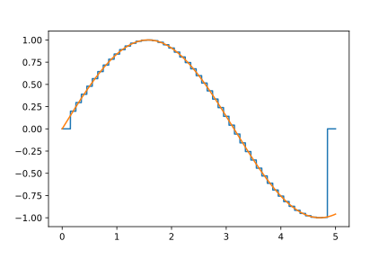 ] .reset-columns[ ] .citation[Conner Davis, [Quora: Is a single layered ReLU network still a universal approximator?](https://www.quora.com/Is-a-single-layered-ReLu-network-still-a-universal-approximator)] --- # Approximation with ReLU nets .left-column[ ```python import numpy as np import matplotlib.pyplot as plt def relu(x): return np.maximum(x, 0) def rect(x, a, b, h, eps=1e-7): return h / eps * ( relu(x - a) - relu(x - (a + eps)) - relu(x - b) + relu(x - (b + eps))) *x = np.arange(0,5,0.01) # 500 z = np.arange(0,5,0.001) sin_approx = np.zeros_like(z) *for i in range(2, x.size-1): * sin_approx = sin_approx + rect(z,(x[i]+x[i-1])/2, * (x[i]+x[i+1])/2, np.sin(x[i]), 1e-7) plt.plot(x, y) ``` ] .right-column[ 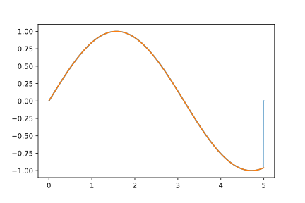 ] .reset-columns[ ] .citation[Conner Davis, [Quora: Is a single layered ReLU network still a universal approximator?](https://www.quora.com/Is-a-single-layered-ReLu-network-still-a-universal-approximator)] --- # Approximation with ReLU nets Consider the 1-layer MLP $$f(x) = \sum w\_i \text{ReLU}(x + b_i).$$ This model can approximate any smooth 1D function with a linear combination of translated/scaled ReLU functions. $$f(x) = \sigma(w\_1 x + b_1)$$ .center[<img src="images/part4/ua-0.png">] .credit[Figure credit: G. Louppe, INFO8004-1 Advanced Machine Learning] --- class: middle count: false Consider the 1-layer MLP $$f(x) = \sum w\_i \text{ReLU}(x + b_i).$$ This model can approximate any smooth 1D function with a linear combination of translated/scaled ReLU functions. $$f(x) = \sigma(w\_1 x + b_1) + \sigma(w\_2 x + b_2)$$ .center[<img src="images/part4/ua-1.png">] .credit[Figure credit: G. Louppe, INFO8004-1 Advanced Machine Learning] --- class: middle count: false Consider the 1-layer MLP $$f(x) = \sum w\_i \text{ReLU}(x + b_i).$$ This model can approximate any smooth 1D function with a linear combination of translated/scaled ReLU functions. $$f(x) = \sigma(w\_1 x + b_1) + \sigma(w\_2 x + b_2) + \sigma(w\_3 x + b_3)$$ .center[<img src="images/part4/ua-2.png">] .credit[Figure credit: G. Louppe, INFO8004-1 Advanced Machine Learning] --- class: middle count: false Consider the 1-layer MLP $$f(x) = \sum w\_i \text{ReLU}(x + b_i).$$ This model can approximate any smooth 1D function with a linear combination of translated/scaled ReLU functions. $$f(x) = \sigma(w\_1 x + b_1) + \sigma(w\_2 x + b_2) + \sigma(w\_3 x + b_3) + \dots$$ .center[<img src="images/part4/ua-3.png">] .credit[Figure credit: G. Louppe, INFO8004-1 Advanced Machine Learning] --- class: middle count: false Consider the 1-layer MLP $$f(x) = \sum w\_i \text{ReLU}(x + b_i).$$ This model can approximate any smooth 1D function with a linear combination of translated/scaled ReLU functions. $$f(x) = \sigma(w\_1 x + b_1) + \sigma(w\_2 x + b_2) + \sigma(w\_3 x + b_3) + \dots$$ .center[<img src="images/part4/ua-4.png">] .credit[Figure credit: G. Louppe, INFO8004-1 Advanced Machine Learning] --- class: middle count: false Consider the 1-layer MLP $$f(x) = \sum w\_i \text{ReLU}(x + b_i).$$ This model can approximate any smooth 1D function with a linear combination of translated/scaled ReLU functions. $$f(x) = \sigma(w\_1 x + b_1) + \sigma(w\_2 x + b_2) + \sigma(w\_3 x + b_3) + \dots$$ .center[<img src="images/part4/ua-5.png">] .credit[Figure credit: G. Louppe, INFO8004-1 Advanced Machine Learning] --- class: middle count: false Consider the 1-layer MLP $$f(x) = \sum w\_i \text{ReLU}(x + b_i).$$ This model can approximate any smooth 1D function with a linear combination of translated/scaled ReLU functions. $$f(x) = \sigma(w\_1 x + b_1) + \sigma(w\_2 x + b_2) + \sigma(w\_3 x + b_3) + \dots$$ .center[<img src="images/part4/ua-6.png">] .credit[Figure credit: G. Louppe, INFO8004-1 Advanced Machine Learning] --- class: middle count: false Consider the 1-layer MLP $$f(x) = \sum w\_i \text{ReLU}(x + b_i).$$ This model can approximate any smooth 1D function with a linear combination of translated/scaled ReLU functions. $$f(x) = \sigma(w\_1 x + b_1) + \sigma(w\_2 x + b_2) + \sigma(w\_3 x + b_3) + \dots$$ .center[<img src="images/part4/ua-7.png">] .credit[Figure credit: G. Louppe, INFO8004-1 Advanced Machine Learning] --- class: middle count: false Consider the 1-layer MLP $$f(x) = \sum w\_i \text{ReLU}(x + b_i).$$ This model can approximate any smooth 1D function with a linear combination of translated/scaled ReLU functions. $$f(x) = \sigma(w\_1 x + b_1) + \sigma(w\_2 x + b_2) + \sigma(w\_3 x + b_3) + \dots$$ .center[<img src="images/part4/ua-8.png">] .credit[Figure credit: G. Louppe, INFO8004-1 Advanced Machine Learning] --- class: middle count: false Consider the 1-layer MLP $$f(x) = \sum w\_i \text{ReLU}(x + b_i).$$ This model can approximate any smooth 1D function with a linear combination of translated/scaled ReLU functions. $$f(x) = \sigma(w\_1 x + b_1) + \sigma(w\_2 x + b_2) + \sigma(w\_3 x + b_3) + \dots$$ .center[<img src="images/part4/ua-9.png">] .credit[Figure credit: G. Louppe, INFO8004-1 Advanced Machine Learning] --- class: middle count: false Consider the 1-layer MLP $$f(x) = \sum w\_i \text{ReLU}(x + b_i).$$ This model can approximate any smooth 1D function with a linear combination of translated/scaled ReLU functions. $$f(x) = \sigma(w\_1 x + b_1) + \sigma(w\_2 x + b_2) + \sigma(w\_3 x + b_3) + \dots$$ .center[<img src="images/part4/ua-10.png">] .credit[Figure credit: G. Louppe, INFO8004-1 Advanced Machine Learning] --- class: middle count: false Consider the 1-layer MLP $$f(x) = \sum w\_i \text{ReLU}(x + b_i).$$ This model can approximate any smooth 1D function with a linear combination of translated/scaled ReLU functions. $$f(x) = \sigma(w\_1 x + b_1) + \sigma(w\_2 x + b_2) + \sigma(w\_3 x + b_3) + \dots$$ .center[<img src="images/part4/ua-11.png">] .credit[Figure credit: G. Louppe, INFO8004-1 Advanced Machine Learning] --- class: middle count: false Consider the 1-layer MLP $$f(x) = \sum w\_i \text{ReLU}(x + b_i).$$ This model can approximate any smooth 1D function with a linear combination of translated/scaled ReLU functions. $$f(x) = \sigma(w\_1 x + b_1) + \sigma(w\_2 x + b_2) + \sigma(w\_3 x + b_3) + \dots$$ .center[<img src="images/part4/ua-12.png">] .credit[Figure credit: G. Louppe, INFO8004-1 Advanced Machine Learning] --- # Universal approximation Even if the MLP is able to represent the function, learning can fail for two different reasons: - the optimization algorithm may not be able to find the value of the parameters that correspond to the desired function - the training algorithm my,ight chose the wrong function as result of overfitting --- # Universal approximation .grid[ .kol-4-12[ .center[] ] .kol-4-12[ .center[] ] .kol-4-12[ .center[] ] ] --- # Universal approximation Adding more neurons .left-column[ .center.width-90[] ] .right-column[ .center.width-90[] ] --- # Overparametrization may help optimization ## Folklore experiment .left-column[ .center.width-60[] _Step 1:_ Generate labeled data by feeding random input vectors into depth $2$ net with hidden layer of size $n$ ] .right-column[ .center.width-60[] _Step 2:_ Difficult to train a new network using this labeled data with the same amount of hidden nodes. .red[It is much easier to train a new net with bigger hidden layer or addition layer] ] .citation[Livni et al.; 2014] --- class: middle # Benefits of depth --- # The benefits of depth .caption[GINN: Geometric Illustrations for Neural Networks (http://www.bayeswatch.com/2018/09/17/GINN/)] .center.width-40[] --- # Efficient Oscillations with Composition .left-column[ ```python import numpy as np import matplotlib.pyplot as plt def relu(x): return np.maximum(x, 0) def tri(x): return relu( relu(2 * x) - relu(4 * x - 2)) x = np.linspace(-.3, 1.3, 1000) y = tri(x) plt.plot(x, y) ``` ] .right-column[ <img src="images/part4/triangle_x.svg" width="100%" /> ] .citation[M. Telgarsky, [Benefits of depth in neural networks](https://www.youtube.com/watch?v=ssaXJqG9Dz4), COLT 2016 ] --- # Efficient Oscillations with Composition .left-column[ ```python import numpy as np import matplotlib.pyplot as plt def relu(x): return np.maximum(x, 0) def tri(x): return relu( relu(2 * x) - relu(4 * x - 2)) x = np.linspace(-.3, 1.3, 1000) *y = tri(tri(x)) plt.plot(x, y) ``` ] .right-column[ <img src="images/part4/triangle_triangle_x.svg" width="100%" /> ] .citation[M. Telgarsky, [Benefits of depth in neural networks](https://www.youtube.com/watch?v=ssaXJqG9Dz4), COLT 2016 ] --- # Efficient Oscillations with Composition .left-column[ ```python import numpy as np import matplotlib.pyplot as plt def relu(x): return np.maximum(x, 0) def tri(x): return relu( relu(2 * x) - relu(4 * x - 2)) x = np.linspace(-.3, 1.3, 1000) *y = tri(tri(tri(x))) plt.plot(x, y) ``` ] .right-column[ <img src="images/part4/triangle_triangle_triangle_x.svg" width="100%" /> ] .center[ 1 more layer → 2x more oscillations ] .citation[M. Telgarsky, [Benefits of depth in neural networks](https://www.youtube.com/watch?v=ssaXJqG9Dz4), COLT 2016 ] --- # Efficient Oscillations with Composition .left-column[ ```python import numpy as np import matplotlib.pyplot as plt def relu(x): return np.maximum(x, 0) def tri(x): return relu( relu(2 * x) - relu(4 * x - 2)) x = np.linspace(-.3, 1.3, 1000) *y = tri(tri(tri(tri(x)))) plt.plot(x, y) ``` ] .right-column[ <img src="images/part4/triangle_triangle_triangle_triangle_x.svg" width="100%" /> ] .center[ 1 more layer → 2x more oscillations ] .citation[M. Telgarsky, [Benefits of depth in neural networks](https://www.youtube.com/watch?v=ssaXJqG9Dz4), COLT 2016 ] --- # Efficient Oscillations with Composition .left-column[ - Adding the parameters required for **one new layer** can **multiply by two the number of local oscillations** in the decision function of the model. - This is to be constrasted with the approach of adding parameters **on the same layer** (as in the rectangle example) that can only contribute an **additive number of new local oscillations**. ] .right-column[ <img src="images/part4/triangle_triangle_triangle_triangle_x.svg" width="100%" /> ] .citation[M. Telgarsky, [Benefits of depth in neural networks](https://www.youtube.com/watch?v=ssaXJqG9Dz4), COLT 2016 ] --- # Effect of depth .bold[Theorem] (Montúfar et al, 2014) A rectifier neural network with $p$ input units and $L$ hidden layers of width $q \geq p$ can compute functions that have $\Omega((\frac{q}{p})^{(L-1)p} q^p)$ linear regions. - That is, the number of linear regions of deep models grows **exponentially** in $L$ and polynomially in $q$. - Even for small values of $L$ and $q$, deep rectifier models are able to produce substantially more linear regions than shallow rectifier models. <br> .center.width-80[] --- # Depth and Parametric Cost .bold[Theorem](Telgarsky, 2016): There exists functions that can be approximated by a deep ReLU network with $\Theta(k^3)$ layers with a $\Theta(1)$ units that cannot be approximated by shallower networks with $\Theta(k)$ layers unless they have $\Omega(2^k)$ units. Note: the number of parameters of a deep network is typically quadratic with the number of units. This also **holds for ReLU convnets with max pooling layers**. .citation[M. Telgarsky, Benefits of depth in neural networks, COLT 2016] --- class: middle .center[For a fixed parameter budget deeper is better] .center[ <img src="images/part4/depth-2-vs-depth-1.png" style="width: 700px;" /><br/> ] .citation.tiny[Montufar et al.; On the number of linear regions of deep neural networks; 2014] --- class: middle # The problem with depth --- class: middle Although it was known that _deeper is better_, for decades training deep neural networks was highly challenging and unstable. Besides limited hardware and data there were a few algorithmic flaws that have been fixed/softened in the last decade. --- # Vanishing gradients Training deep MLPs with many layers has for long (pre-2011) been very difficult due to the **vanishing gradient** problem. - Small gradients slow down, and eventually block, stochastic gradient descent. - This results in a limited capacity of learning. .center.width-60[<img src="images/part4/vanishing-gradient.png">] .center[Backpropagated gradients normalized histograms (Glorot and Bengio, 2010).<br> Gradients for layers far from the output vanish to zero. ] .citation[Glorot and Bengio, Understanding the difficulty of training deep feedforward neural networks; AISTAT 2010] --- class: middle Consider a simplified 3-layer MLP, with $x, w\_1, w\_2, w\_3 \in\mathbb{R}$, such that $$f(x; w\_1, w\_2, w\_3) = \sigma\left(w\_3\sigma\left( w\_2 \sigma\left( w\_1 x \right)\right)\right). $$ Under the hood, this would be evaluated as $$\begin{aligned} u\_1 &= w\_1 x \\\\ u\_2 &= \sigma(u\_1) \\\\ u\_3 &= w\_2 u\_2 \\\\ u\_4 &= \sigma(u\_3) \\\\ u\_5 &= w\_3 u\_4 \\\\ \hat{y} &= \sigma(u\_5) \end{aligned}$$ and its derivative $\frac{\text{d}\hat{y}}{\text{d}w\_1}$ as $$\begin{aligned}\frac{\text{d}\hat{y}}{\text{d}w\_1} &= \frac{\partial \hat{y}}{\partial u\_5} \frac{\partial u\_5}{\partial u\_4} \frac{\partial u\_4}{\partial u\_3} \frac{\partial u\_3}{\partial u\_2}\frac{\partial u\_2}{\partial u\_1}\frac{\partial u\_1}{\partial w\_1}\\\\ &= \frac{\partial \sigma(u\_5)}{\partial u\_5} w\_3 \frac{\partial \sigma(u\_3)}{\partial u\_3} w\_2 \frac{\partial \sigma(u\_1)}{\partial u\_1} x \end{aligned}$$ .credit[Slide credit: G. Louppe] --- class: middle The derivative of the sigmoid activation function $\sigma$ is: .center[<img src="images/part4/activation-grad-sigmoid.png">] $$\frac{\text{d} \sigma}{\text{d} x}(x) = \sigma(x)(1-\sigma(x))$$ Notice that $0 \leq \frac{\text{d} \sigma}{\text{d} x}(x) \leq \frac{1}{4}$ for all $x$. .credit[Slide credit: G. Louppe] --- class: middle Assume that weights $w\_1, w\_2, w\_3$ are initialized randomly from a Gaussian with zero-mean and small variance, such that with high probability $-1 \leq w\_i \leq 1$. Then, $$\frac{\text{d}\hat{y}}{\text{d}w\_1} = \underbrace{\frac{\partial \sigma(u\_5)}{\partial u\_5}}\_{\leq \frac{1}{4}} \underbrace{w\_3}\_{\leq 1} \underbrace{\frac{\partial \sigma(u\_3)}{\partial u\_3}}\_{\leq \frac{1}{4}} \underbrace{w\_2}\_{\leq 1} \underbrace{\frac{\sigma(u\_1)}{\partial u\_1}}\_{\leq \frac{1}{4}} x$$ This implies that the gradient $\frac{\text{d}\hat{y}}{\text{d}w\_1}$ **exponentially** shrinks to zero as the number of layers in the network increases. Hence the vanishing gradient problem. - In general, bounded activation functions (sigmoid, tanh, etc) are prone to the vanishing gradient problem. - Note the importance of a proper initialization scheme. .credit[Slide credit: G. Louppe] --- # Rectified linear units Instead of the sigmoid activation function, modern neural networks are for most based on **rectified linear units** (ReLU) (Glorot et al, 2011): $$\text{ReLU}(x) = \max(0, x)$$ .center[<img src="images/part4/activation-relu.png">] .credit[Slide credit: G. Louppe] --- class: middle Note that the derivative of the ReLU function is $$\frac{\text{d}}{\text{d}x} \text{ReLU}(x) = \begin{cases} 0 &\text{if } x \leq 0 \\\\ 1 &\text{otherwise} \end{cases}$$ .center[<img src="images/part4/activation-grad-relu.png">] For $x=0$, the derivative is undefined. In practice, it is set to zero. .credit[Slide credit: G. Louppe] --- class: middle Therefore, $$\frac{\text{d}\hat{y}}{\text{d}w\_1} = \underbrace{\frac{\partial \sigma(u\_5)}{\partial u\_5}}\_{= 1} w\_3 \underbrace{\frac{\partial \sigma(u\_3)}{\partial u\_3}}\_{= 1} w\_2 \underbrace{\frac{\partial \sigma(u\_1)}{\partial u\_1}}\_{= 1} x$$ This **solves** the vanishing gradient problem, even for deep networks! (provided proper initialization) Note that: - The ReLU unit dies when its input is negative, which might block gradient descent. - This is actually a useful property to induce *sparsity*. - This issue can also be solved using **leaky** ReLUs, defined as $$\text{LeakyReLU}(x) = \max(\alpha x, x)$$ for a small $\alpha \in \mathbb{R}^+$ (e.g., $\alpha=0.1$). --- class: middle The steeper slope in the loss surface speeds up the training. .center.width-30[] .citation[A. Krizhevsky et al., ImageNet Classification with Deep Convolutional Neural Networks; NIPS 2012] --- # Many other activation functions - Each neuron/unit is followed by a dedicated activation function - Historically the _sigmoid_ and _tanh_ have been the most popular .center.width-50[] - [Many other activation functions available](https://dashee87.github.io/data%20science/deep%20learning/visualising-activation-functions-in-neural-networks/) --- class: center, middle # Regularization --- # Under-fitting and over-fitting What if we consider a hypothesis space $\mathcal{F}$ in which candidate functions $f$ are either too "simple" or too "complex" with respect to the true data generating process? .center[] --- class: middle .center.width-60[] .credit[Slide credit: F. Fleuret, EE-559 Deep learning] --- class: middle count: false .center.width-60[] .credit[Slide credit: F. Fleuret, EE-559 Deep learning] --- class: middle count: false .center.width-60[] .credit[Slide credit: F. Fleuret, EE-559 Deep learning] --- class: middle count: false .center.width-60[] .credit[Slide credit: F. Fleuret, EE-559 Deep learning] --- class: middle count: false .center.width-60[] .credit[Slide credit: F. Fleuret, EE-559 Deep learning] --- class: middle count: false .center.width-60[] .credit[Slide credit: F. Fleuret, EE-559 Deep learning] --- class: middle count: false .center.width-60[] .credit[Slide credit: F. Fleuret, EE-559 Deep learning] --- class: middle count: false .center.width-60[] .credit[Slide credit: F. Fleuret, EE-559 Deep learning] --- class: middle count: false .center.width-60[] .credit[Slide credit: F. Fleuret, EE-559 Deep learning] --- class: middle count: false .center.width-60[] .credit[Slide credit: F. Fleuret, EE-559 Deep learning] --- class: middle count: false .center.width-60[] .credit[Slide credit: F. Fleuret, EE-559 Deep learning] --- class: middle .center.width-60[] .credit[Slide credit: F. Fleuret, EE-559 Deep learning] --- class: middle Our goal is to adjust the capacity of the hypothesis space such that the expected risk of the empirical risk minimizer gets as low as possible. We define the capacity of a set of predictors as its ability to model an arbitrary functional .center[] --- class: middle Although it is difficult to define precisely, it is quite clear in practice how to increase or decrease it for a given class of models. For example: - The degree of polynomials; - The number of layers in a neural network; - The number of training iterations; - Regularization terms. --- class: middle # Regularization --- .center.width-100[] --- # Regularization We can reformulate the previously used squared error loss $$\ell(y, f(x;\mathbf{w})) = (y - f(x;\mathbf{w}))^2$$ to $$\ell(y, f(x;\mathbf{w})) = (y - f(x;\mathbf{w}))^2 + \rho \sum_{d}^{D} w\_d^2$$ <br> .Q.big.center[What will happen now?] --- # Regularization We can reformulate the previously used squared error loss $$\ell(y, f(x;\mathbf{w})) = (y - f(x;\mathbf{w}))^2$$ to $$\ell(y, f(x;\mathbf{w})) = (y - f(x;\mathbf{w}))^2 + \rho \sum_{d}^{D} w\_d^2$$ <br> .center.big[This is called __$L\_2$ regularization__.] --- class: middle .center.width-60[] .credit[Slide credit: F. Fleuret, EE-559 Deep learning] --- class: middle count: false .center.width-60[] .credit[Slide credit: F. Fleuret, EE-559 Deep learning] --- class: middle count: false .center.width-60[] .credit[Slide credit: F. Fleuret, EE-559 Deep learning] --- class: middle count: false .center.width-60[] .credit[Slide credit: F. Fleuret, EE-559 Deep learning] --- class: middle count: false .center.width-60[] .credit[Slide credit: F. Fleuret, EE-559 Deep learning] --- class: middle count: false .center.width-60[] .credit[Slide credit: F. Fleuret, EE-559 Deep learning] --- class: middle count: false .center.width-60[] .credit[Slide credit: F. Fleuret, EE-559 Deep learning] --- class: middle count: false .center.width-60[] .credit[Slide credit: F. Fleuret, EE-559 Deep learning] --- class: middle count: false .center.width-60[] .credit[Slide credit: F. Fleuret, EE-559 Deep learning] --- class: middle count: false .center.width-60[] .credit[Slide credit: F. Fleuret, EE-559 Deep learning] --- class: middle count: false .center.width-60[] .credit[Slide credit: F. Fleuret, EE-559 Deep learning] --- class: middle count: false .center.width-60[] .credit[Slide credit: F. Fleuret, EE-559 Deep learning] --- class: middle count: false .center.width-60[] .credit[Slide credit: F. Fleuret, EE-559 Deep learning] --- class: middle count: false .center.width-60[] .credit[Slide credit: F. Fleuret, EE-559 Deep learning] --- class: middle count: false .center.width-60[] .credit[Slide credit: F. Fleuret, EE-559 Deep learning] --- class: middle count: false .center.width-60[] .credit[Slide credit: F. Fleuret, EE-559 Deep learning] --- class: middle count: false .center.width-60[] .credit[Slide credit: F. Fleuret, EE-559 Deep learning] --- class: center, middle # Deep regularization --- class: middle .width-40[] .citation[C. Zhang et al., Understanding deep learning requires rethinking generalization, ICLR 2017] --- class: middle However ... .center.width-100[] .citation[C. Zhang et al., Understanding deep learning requires rethinking generalization, ICLR 2017] --- class: middle However ... .center.width-40[] .citation[C. Zhang et al., Understanding deep learning requires rethinking generalization, ICLR 2017] --- class: center, middle ### Most of the weights of the network are grouped in the final layers. .center.width-80[] --- # VGG-16 .center[ <img src="images/part4/vgg.png" style="width: 600px;" /> ] .citation[K. Simonyan and A. Zisserman, Very deep convolutional networks for large-scale image recognition, NIPS 2014] --- # Memory and Parameters ```md Activation maps Parameters INPUT: [224x224x3] = 150K 0 CONV3-64: [224x224x64] = 3.2M (3x3x3)x64 = 1,728 CONV3-64: [224x224x64] = 3.2M (3x3x64)x64 = 36,864 POOL2: [112x112x64] = 800K 0 CONV3-128: [112x112x128] = 1.6M (3x3x64)x128 = 73,728 CONV3-128: [112x112x128] = 1.6M (3x3x128)x128 = 147,456 POOL2: [56x56x128] = 400K 0 CONV3-256: [56x56x256] = 800K (3x3x128)x256 = 294,912 CONV3-256: [56x56x256] = 800K (3x3x256)x256 = 589,824 CONV3-256: [56x56x256] = 800K (3x3x256)x256 = 589,824 POOL2: [28x28x256] = 200K 0 CONV3-512: [28x28x512] = 400K (3x3x256)x512 = 1,179,648 CONV3-512: [28x28x512] = 400K (3x3x512)x512 = 2,359,296 CONV3-512: [28x28x512] = 400K (3x3x512)x512 = 2,359,296 POOL2: [14x14x512] = 100K 0 CONV3-512: [14x14x512] = 100K (3x3x512)x512 = 2,359,296 CONV3-512: [14x14x512] = 100K (3x3x512)x512 = 2,359,296 CONV3-512: [14x14x512] = 100K (3x3x512)x512 = 2,359,296 POOL2: [7x7x512] = 25K 0 FC: [1x1x4096] = 4096 7x7x512x4096 = 102,760,448 FC: [1x1x4096] = 4096 4096x4096 = 16,777,216 FC: [1x1x1000] = 1000 4096x1000 = 4,096,000 TOTAL activations: 24M x 4 bytes ~= 93MB / image (x2 for backward) TOTAL parameters: 138M x 4 bytes ~= 552MB (x2 for plain SGD, x4 for Adam) ``` .credit[Slide credit: C. Ollion & O. Grisel, M2DS Deep Learning] --- # Memory and Parameters ```md Activation maps Parameters INPUT: [224x224x3] = 150K 0 *CONV3-64: [224x224x64] = 3.2M (3x3x3)x64 = 1,728 *CONV3-64: [224x224x64] = 3.2M (3x3x64)x64 = 36,864 POOL2: [112x112x64] = 800K 0 CONV3-128: [112x112x128] = 1.6M (3x3x64)x128 = 73,728 CONV3-128: [112x112x128] = 1.6M (3x3x128)x128 = 147,456 POOL2: [56x56x128] = 400K 0 CONV3-256: [56x56x256] = 800K (3x3x128)x256 = 294,912 CONV3-256: [56x56x256] = 800K (3x3x256)x256 = 589,824 CONV3-256: [56x56x256] = 800K (3x3x256)x256 = 589,824 POOL2: [28x28x256] = 200K 0 CONV3-512: [28x28x512] = 400K (3x3x256)x512 = 1,179,648 CONV3-512: [28x28x512] = 400K (3x3x512)x512 = 2,359,296 CONV3-512: [28x28x512] = 400K (3x3x512)x512 = 2,359,296 POOL2: [14x14x512] = 100K 0 CONV3-512: [14x14x512] = 100K (3x3x512)x512 = 2,359,296 CONV3-512: [14x14x512] = 100K (3x3x512)x512 = 2,359,296 CONV3-512: [14x14x512] = 100K (3x3x512)x512 = 2,359,296 POOL2: [7x7x512] = 25K 0 *FC: [1x1x4096] = 4096 7x7x512x4096 = 102,760,448 FC: [1x1x4096] = 4096 4096x4096 = 16,777,216 FC: [1x1x1000] = 1000 4096x1000 = 4,096,000 TOTAL activations: 24M x 4 bytes ~= 93MB / image (x2 for backward) TOTAL parameters: 138M x 4 bytes ~= 552MB (x2 for plain SGD, x4 for Adam) ``` .credit[Slide credit: C. Ollion & O. Grisel, M2DS Deep Learning] --- # Dropout - First "deep" regularization technique - Remove units at random during the forward pass on each sample - Put them all back during test .center[ <img src="images/part4/dropout.png" style="width: 680px;" /> ] .citation[Srivastava et al., Dropout: A Simple Way to Prevent Neural Networks from Overfitting, JMLR 2014] --- # Dropout ## Interpretation - Reduces the network dependency to individual neurons and distributes representation - More redundant representation of data ## Ensemble interpretation - Equivalent to training a large ensemble of shared-parameters, binary-masked models - Each model is only trained on a single data point - __A network with dropout can be interpreted as an ensemble of $2^N$ models with heavy weight sharing__ (Goodfellow et al., 2013) --- # Dropout .center[ <img src="images/part4/dropout_traintest.png" style="width: 600px;" /><br/> ] - One has to decide on which units/layers to use dropout, and with what probability $p$ units are dropped. - During training, for each sample, as many Bernoulli variables as units are sampled independently to select units to remove. - To keep the means of the inputs to layers unchanged, the initial version of dropout was multiplying activations by $p$ during test. - The standard variant is the "inverted dropout": multiply activations by $\frac{1}{1-p}$ during training and keep the network untouched during test. --- # Dropout Overfitting noise .center[<img src="images/part4/dropout_curves_1.svg" style="width: 600px;" /><br/> ] .credit[Slide credit: C. Ollion & O. Grisel, M2DS Deep Learning] --- # Dropout A bit of Dropout .center[<img src="images/part4/dropout_curves_2.svg" style="width: 600px;" /><br/> ] .credit[Slide credit: C. Ollion & O. Grisel, M2DS Deep Learning] --- # Dropout Too much: underfitting .center[<img src="images/part4/dropout_curves_3.svg" style="width: 600px;" /><br/> ] .credit[Slide credit: C. Ollion & O. Grisel, M2DS Deep Learning] --- # Dropout .center.width-50[] .citation[Srivastava et al., Dropout: A Simple Way to Prevent Neural Networks from Overfitting, JMLR 2014] --- # Dropout Features learned on MNIST with one hidded layer autoencoders having 256 rectified linear units .center.width-80[] .citation[Srivastava et al., Dropout: A Simple Way to Prevent Neural Networks from Overfitting, JMLR 2014] --- # Dropout Effect of _Dropout_ on sparsity .center.width-80[] - ReLUs used for both models - showing histogram of mean activations and histogram of activations .citation[Srivastava et al., Dropout: A Simple Way to Prevent Neural Networks from Overfitting, JMLR 2014] --- # Dropout ```py >>> x = torch.full((3, 5), 1.0).requires_grad_() >>> x tensor([[ 1., 1., 1., 1., 1.], [ 1., 1., 1., 1., 1.], [ 1., 1., 1., 1., 1.]]) >>> dropout = nn.Dropout(p = 0.75) >>> y = dropout(x) >>> y tensor([[ 0., 0., 4., 0., 4.], [ 0., 4., 4., 4., 0.], [ 0., 0., 4., 0., 0.]]) >>> l = y.norm(2, 1).sum() >>> l.backward() >>> x.grad tensor([[ 0.0000, 0.0000, 2.8284, 0.0000, 2.8284] [ 0.0000, 2.3094, 2.3094, 2.3094, 0.0000] [ 0.0000, 0.0000, 4.0000, 0.0000, 0.0000]]) ``` --- # Dropout ```py >>> x = torch.full((3, 5), 1.0).requires_grad_() >>> x tensor([[ 1., 1., 1., 1., 1.], [ 1., 1., 1., 1., 1.], [ 1., 1., 1., 1., 1.]]) >>> dropout = nn.Dropout(p = 0.75) >>> y = dropout(x) *>>> y *tensor([[ 0., 0., 4., 0., 4.], * [ 0., 4., 4., 4., 0.], * [ 0., 0., 4., 0., 0.]]) >>> l = y.norm(2, 1).sum() >>> l.backward() >>> x.grad tensor([[ 0.0000, 0.0000, 2.8284, 0.0000, 2.8284] [ 0.0000, 2.3094, 2.3094, 2.3094, 0.0000] [ 0.0000, 0.0000, 4.0000, 0.0000, 0.0000]]) ``` --- # Dropout For a given network ```py model = nn.Sequential(nn.Linear(10, 100), nn.ReLU(), nn.Linear(100, 50), nn.ReLU(), nn.Linear(50, 2)); ``` -- we can simply add dropout layers ```py model = nn.Sequential(nn.Linear(10, 100), nn.ReLU(), * nn.Dropout(), nn.Linear(100, 50), nn.ReLU(), * nn.Dropout(), nn.Linear(50, 2)); ``` --- # Dropout A model using dropout has to be set in __train__ or __test__ mode --- # Dropout A model using dropout has to be set in __train__ or __test__ mode The method `nn.Module.train(mode)` recursively sets the flag `training` to all sub-modules. ```py >>> dropout = nn.Dropout() >>> model = nn.Sequential(nn.Linear(3, 10), dropout, nn.Linear(10, 3)) >>> dropout.training True >>> model.train(False) Sequential ( (0): Linear (3 -> 10) (1): Dropout (p = 0.5) (2): Linear (10 -> 3) ) >>> dropout.training False ``` --- # Dropout A model using dropout has to be set in __train__ or __test__ mode ```py >>> dropout = nn.Dropout() >>> model = nn.Sequential(nn.Linear(3, 10), dropout, nn.Linear(10, 3)) >>> x = torch.full((1, 3), 1.0) *>>> model.train() Sequential ( (0): Linear (3 -> 10) (1): Dropout (p = 0.5) (2): Linear (10 -> 3) ) >>> model(x) *tensor([[ 0.5360, -0.5225, -0.5129]], grad_fn=<ThAddmmBackward>) >>> model(x) *tensor([[ 0.6134, -0.6130, -0.5161]], grad_fn=<ThAddmmBackward>) ``` --- # Dropout A model using dropout has to be set in __train__ or __test__ mode ```py >>> dropout = nn.Dropout() >>> model = nn.Sequential(nn.Linear(3, 10), dropout, nn.Linear(10, 3)) >>> x = torch.full((1, 3), 1.0) >>> model.train() Sequential ( (0): Linear (3 -> 10) (1): Dropout (p = 0.5) (2): Linear (10 -> 3) ) >>> model(x) tensor([[ 0.5360, -0.5225, -0.5129]], grad_fn=<ThAddmmBackward>) >>> model(x) tensor([[ 0.6134, -0.6130, -0.5161]], grad_fn=<ThAddmmBackward>) >>> *>>> model.eval() Sequential ( (0): Linear (3 -> 10) (1): Dropout (p = 0.5) (2): Linear (10 -> 3) ) >>> model(x) *tensor([[ 0.5772, -0.0944, -0.1168]], grad_fn=<ThAddmmBackward>) >>> model(x) *tensor([[ 0.5772, -0.0944, -0.1168]], grad_fn=<ThAddmmBackward>) ``` --- # Spatial Dropout As pointed out by Tompson et al. (2015), units in a 2d activation map are generally locally correlated, and dropout has virtually no effect. They proposed SpatialDropout, which drops channels instead of individual units. .credit[Slide credit: F. Fleuret, EE-559 Deep learning] --- # Spatial Dropout ```py >>> dropout2d = nn.Dropout2d() >>> x = Variable(Tensor(2, 3, 2, 2).fill_(1.0)) >>> dropout2d(x) Variable containing: (0 ,0 ,.,.) = 0 0 0 0 (0 ,1 ,.,.) = 0 0 0 0 (0 ,2 ,.,.) = 2 2 2 2 (1 ,0 ,.,.) = 2 2 2 2 (1 ,1 ,.,.) = 0 0 0 0 (1 ,2 ,.,.) = 2 2 2 2 [torch.FloatTensor of size 2x3x2x2] ``` --- # DropOut for uncertainty estimation .center.width-100[] .citation[A. Kendall, What Uncertainties Do We Need in Bayesian Deep Learning for Computer Vision?, NIPS 2017] --- # Batch normalization We saw that maintaining proper statistics of the activations and derivatives was a critical issue to allow the training of deep architectures. It is the main motivation behind weight initialization rules (we'll cover them later). --- # Batch normalization We saw that maintaining proper statistics of the activations and derivatives was a critical issue to allow the training of deep architectures. It is the main motivation behind weight initialization rules (we'll cover them later). A different approach consists of explicitly forcing the activation statistics during the forward pass by re-normalizing them. __Batch normalization__ proposed by Ioffe and Szegedy (2015) was the first method introducing this idea. --- class:middle "Training Deep Neural Networks is complicated by the fact that the __distribution of each layer's inputs changes during training, as the parameters of the previous layers change__. This slows down the training by requiring lower learning rates and careful parameter initialization ..." .pull-right[(Ioffe and Szegedy, 2015)] .citation[S. Ioffe and C. Szegedy, Batch Normalization: Accelerating Deep Network Training by Reducing Internal Covariate Shift; arXiv 2015] --- class:middle "Training Deep Neural Networks is complicated by the fact that the __distribution of each layer's inputs changes during training, as the parameters of the previous layers change__. This slows down the training by requiring lower learning rates and careful parameter initialization ..." .pull-right[(Ioffe and Szegedy, 2015)] .reset-column[ ] .center.width-60[] .citation[S. Ioffe and C. Szegedy, Batch Normalization: Accelerating Deep Network Training by Reducing Internal Covariate Shift; arXiv 2015] --- class: middle Consider a simplified 3-layer MLP, with $x, w\_1, w\_2, w\_3 \in\mathbb{R}$, such that $$f(x; w\_1, w\_2, w\_3) = \sigma\left(w\_3\sigma\left( w\_2 \sigma\left( w\_1 x \right)\right)\right). $$ Under the hood, this would be evaluated as $$\begin{aligned} u\_1 &= w\_1 x \\\\ u\_2 &= \sigma(u\_1) \\\\ u\_3 &= w\_2 u\_2 \\\\ u\_4 &= \sigma(u\_3) \\\\ u\_5 &= w\_3 u\_4 \\\\ \hat{y} &= \sigma(u\_5) \end{aligned}$$ --- class:middle "Training Deep Neural Networks is complicated by the fact that the __distribution of each layer's inputs changes during training, as the parameters of the previous layers change__. This slows down the training by requiring lower learning rates and careful parameter initialization ..." .pull-right[(Ioffe and Szegedy, 2015)] .reset-column[ ] .center.width-60[] Batch normalization can be done anywhere in a deep architecture, and forces the activations' first and second order moments, so that the following layers do not need to adapt to their drift. .citation[S. Ioffe and C. Szegedy, Batch Normalization: Accelerating Deep Network Training by Reducing Internal Covariate Shift; arXiv 2015] --- # Batch normalization Normalize activations in each **mini-batch** before activation function: **speeds up** and **stabilizes** training (less dependent on init) Batch normalization forces the activation first and second order moments, so that the following layers do not need to adapt to their drift. --- # Batch normalization Normalize activations in each **mini-batch** before activation function: **speeds up** and **stabilizes** training (less dependent on init) .center[ <img src="images/part4/batchnorm.png" style="width: 450px;" /> ] <br/> .citation[S. Ioffe and C. Szegedy, Batch Normalization: Accelerating Deep Network Training by Reducing Internal Covariate Shift; arXiv 2015] --- # Batch normalization During training batch normalization __shifts and rescales according to the mean and variance estimated on the batch__. .center[ <img src="images/part4/batchnorm.png" style="width: 450px;" /> ] As for dropout, the model behaves differently during train and test. --- # Batch normalization At **inference time**, use average and standard deviation computed on **the whole dataset** instead of batch Widely used in **ConvNets**, but requires the mini-batch to be large enough to compute statistics in the minibatch. --- # Batch normalization As dropout, batch normalization is implemented as a separate module `torch.BatchNorm1d` that processes the input components separately. ```py >>> x = torch.Tensor(10000, 3).normal_() >>> x = x * torch.Tensor([2., 5., 10.]) + torch.Tensor([-10., 25., 3.]) >>> x.mean(0) tensor([-9.9898, 24.9165,2.8945]) >>> x.std(0) tensor([2.0006, 5.0146, 9.9501]) >>> bn = nn.BatchNorm1d(3) >>> with torch.no_grad(): ... bn.bias.copy_(torch.tensor([2., 4., 8.])) ... bn.weight.copy_(torch.tensor([1., 2., 3.])) ... Parameter containing: tensor([2., 4., 8.]) Parameter containing: tensor([1., 2., 3.]) >>> y = bn(x) >>> y.mean(0) tensor([2.0000, 4.0000, 8.0000]) >>> y.std(0) tensor([1.0005, 2.0010, 3.0015]) ``` --- # Batch normalization `BatchNorm2d` example ```py >>> x = Variable(torch.randn(20, 100, 35, 45)) >>> bn2d = nn.BatchNorm2d(100) >>> y = bn2d(x) >>> x.size() torch.Size([20, 100, 35, 45]) >>> bn2d.weight.data.size() torch.Size([100]) >>> bn2d.bias.data.size() torch.Size([100]) ``` --- # Batch normalization Results on ImageNet LSVRC 2012: .center[ 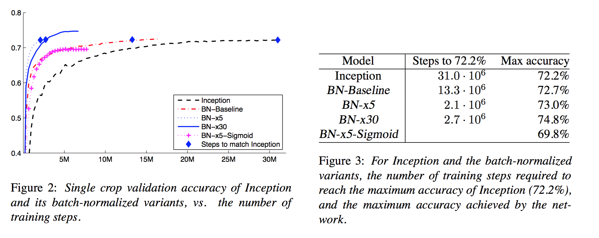<br/> ] .citation[S. Ioffe and C. Szegedy, Batch Normalization: Accelerating Deep Network Training by Reducing Internal Covariate Shift; arXiv 2015] --- # Batch normalization Results on ImageNet LSVRC 2012: .center[ <br/> ] - learning rate can be greater - dropout and local normalization are not necessary - $L^2$ regularization influence should be reduced .citation[S. Ioffe and C. Szegedy, Batch Normalization: Accelerating Deep Network Training by Reducing Internal Covariate Shift; arXiv 2015] --- # Batch normalization Deep MLP on a 2d "disc" toy example (class $+1$ on the disk, $-1$ outside), with naive Gaussian weight initialization, cross-entropy, standard SGD, $\eta = 0.1$. ```py def create_model(with_batchnorm, nc = 32, depth = 16): modules = [] modules.append(nn.Linear(2, nc)) if with_batchnorm: modules.append(nn.BatchNorm1d(nc)) modules.append(nn.ReLU()) for d in range(depth): modules.append(nn.Linear(nc, nc)) if with_batchnorm: modules.append(nn.BatchNorm1d(nc)) modules.append(nn.ReLU()) modules.append(nn.Linear(nc, 2)) return nn.Sequential(*modules) ``` We try different standard deviations for the weights: ```py with torch.no_grad(): for p in model.parameters(): p.normal_(0, std) ``` .credit[Slide credit: F. Fleuret, EE-559 Deep learning] --- # Batch normalization .center[ 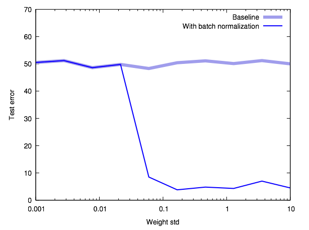<br/> ] .credit[Slide credit: F. Fleuret, EE-559 Deep learning] --- The position of batch normalization relative to the non-linearity is not clear. .center.width-40[ ] -- In the original paper, Ioffe and Szegedy, added BN right before nonlinearity: $$\dots \to \texttt{LINEAR} \to \texttt{BN} \to \texttt{ReLU} \to \dots$$ -- However, there are arguments for both ways: activations after the non-linearity are less "naturally normalized" and benefit more from batch normalization. Experiments are generally in favor of this solution, which is the current default. $$\dots \to \texttt{LINEAR} \to \texttt{ReLU} \to \texttt{BN} \to \dots$$ --- # Layer Normalizations Normalize on the statistics of the **layer activations** instead of mini-batch. .center[ <img src="images/part4/layernorm.png" style="width: 400px;" /> ] .citation[Ba et al., Layer Normalization, 2016 ] -- The algorithm is then similar as Batch Normalization -- Suited for **RNNs**, degrades performance of **CNNs** --- # Multiple variants <br> .center[ 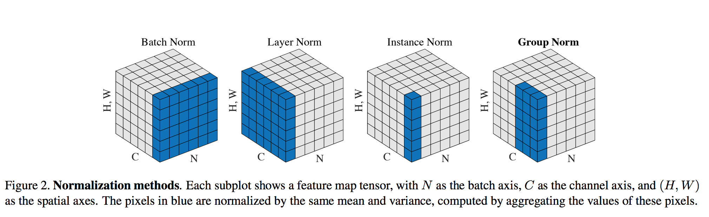 ] .citation[Y. Wu and K. He, Group Normalization, ECCV 2018] --- # Group Normalization .center.width-70[] .citation[Y. Wu and K. He, Group Normalization, ECCV 2018] --- # Group Normalization .center.width-80[] .citation[Y. Wu and K. He, Group Normalization, ECCV 2018] --- # Group Normalization <br><br><br> .center.width-70[] .caption[Evolution of `conv5_3` activations during training] .citation[Y. Wu and K. He, Group Normalization, ECCV 2018] --- # Group Normalization .center.width-70[] .center.width-70[] .citation[Y. Wu and K. He, Group Normalization, ECCV 2018] --- # Weight Normalization Reparametrize weights of neurons, to decouple **direction** and **norm** of the weight: $$ \mathbf{w} = \frac{g}{||\mathbf{v}||}\mathbf{v} $$ .citation[T. Salimans et al., Weight normalization: A simple reparameterization to accelerate training of deep neural networks, NIPS 2016. ] -- One new parameter $g$ to learn per neuron: $g = {||\mathbf{w}||}$ -- For CNNs it's more convenient to normalize weights rather than activations: num_params $<$ num_activations -- Careful **data-based** initialization of $g$ and neuron bias $b$ is better (not applicable to RNNs) --- class: middle # How deep can we go now? --- # A saturation point If we continue stacking more layers on a CNN: .center[ 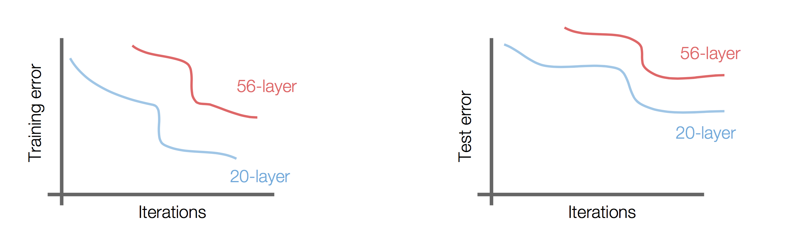 ] -- .center[.red[Deeper models are harder to optimize]] --- .left-column[ # ResNet ] .right-column[ .center[ <img src="images/part4/resnet.png" style="width: 280px;" /> ] ] A block learns the residual w.r.t. identity .center[ <img src="images/part4/residualblock.png" style="width: 290px;" /> ] .citation[K. He et al., Deep residual learning for image recognition, CVPR 2016.] -- - Good optimization properties --- .left-column[ # ResNet ] .right-column[ .center[ <img src="images/part4/resnet.png" style="width: 280px;" /> ] ] Even deeper models: 34, 50, 101, 152 layers .citation[K. He et al., Deep residual learning for image recognition, CVPR 2016.] --- .left-column[ # ResNet ] .right-column[ .center[ <img src="images/part4/resnet.png" style="width: 280px;" /> ] ] ResNet50 Compared to VGG: ### Superior accuracy in all vision tasks <br/>**5.25%** top-5 error vs 7.1% -- ### Less parameters <br/>**25M** vs 138M -- ### Computational complexity <br/>**3.8B Flops** vs 15.3B Flops -- ### Fully Convolutional until the last layer .citation[K. He et al., Deep residual learning for image recognition, CVPR 2016.] --- # ResNet ## Performance on ImageNet .center.width-90[] --- # ResNet The output of a residual network can be understood as an ensemble, which explains in part its stability .center[ 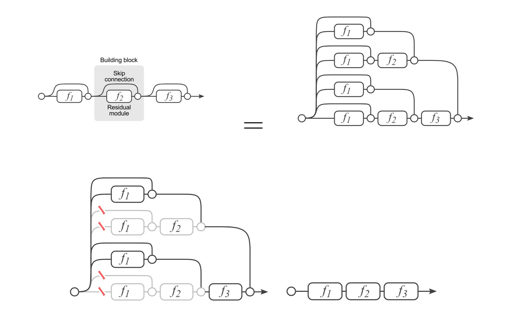 ] .citation[A. Veit et al., Residual Networks Behave Like Ensembles of Relatively Shallow Networks, NIPS 2016] --- # ResNet ## Results .center.width-100[] --- # ResNet Results .center[ 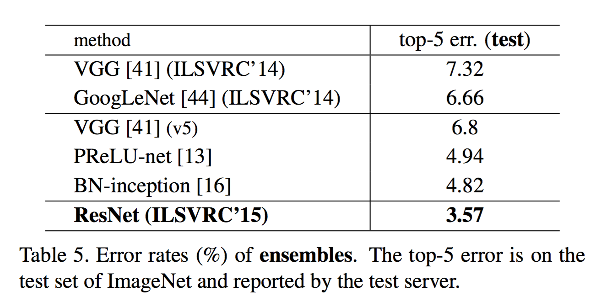 ] --- # ResNet In PyTorch: ```py def make_resnet_block(num_feature_maps , kernel_size = 3): return nn.Sequential( nn.Conv2d(num_feature_maps , num_feature_maps , kernel_size = kernel_size , padding = (kernel_size - 1) // 2), nn.BatchNorm2d(num_feature_maps), nn.ReLU(inplace = True), nn.Conv2d(num_feature_maps , num_feature_maps , kernel_size = kernel_size , padding = (kernel_size - 1) // 2), nn.BatchNorm2d(num_feature_maps), ) ``` --- # ResNet In PyTorch: ```py def __init__(self, num_residual_blocks, num_feature_maps) ... self.resnet_blocks = nn.ModuleList() for k in range(nb_residual_blocks): self.resnet_blocks.append(make_resnet_block(num_feature_maps , 3)) ... ``` ```py def forward(self,x): ... for b in self.resnet_blocks: * x = x + b(x) ... return x ``` --- For ResNet50+ layers some additional modifications need to be made to keep number of parameters and computations manageable .center.width-70[] Such a block requires $2 \times (3 \times 3 \times 256 +1) \times 256 \simeq 1.2M$ parameters -- Adress this problem using __bottleneck__ block .center.width-100[] .center[$256 \times 64 + (3 \times 3 \times 64 +1) \times 64 + 64 \times 256 \simeq 70K$ parameters] --- # Deeper is better .center.width-70[] --- # Inception-V4 / -ResNet-V2 Deep, modular and state-of-the-art</br> Achieves **3.1% top-5** classification error on imagenet .center.width-50[] .citation[C. Szegedy et al.,Inception-v4, inception-resnet and the impact of residual connections on learning, 2016] --- # Inception-V4 / -ResNet-V2 More building blocks engineering... .center.width-80[] .citation[C. Szegedy et al.,Inception-v4, inception-resnet and the impact of residual connections on learning, 2016] --- # Resnet variants: Stochastic Depth Networks - DropOut at layer level - Allows training up to 1K layers .center.width-80[] .citation.tiny[Huang et al., Deep Networks with Stochastic Depth, ECCV 2016] --- # Resnet variants: DenseNet - Copying feature maps to upper layers via skip-connections - Better reuse of parameters and redundancy avoidance .center[ 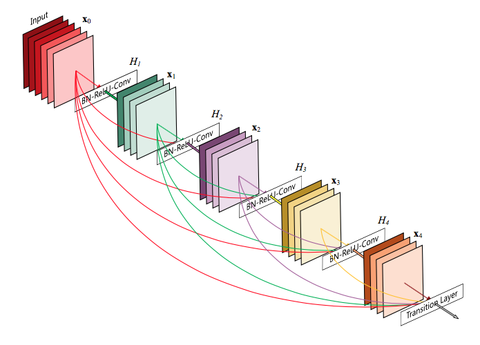 ] .center[ 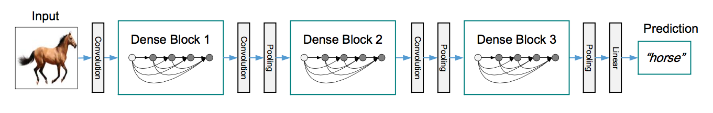 ] .citation[Huang et al., Densely Connected Convolutional Networks, CVPR 2017] --- # Visualizing loss surfaces .center.width-70[] .citation[H. Li et al., Visualizing the Loss Landscape of Neural Nets, ICLR workshop 2018] --- # Visualizing loss surfaces Pick a center point $\theta^{*}$ in the graph and choose two direction vectors $\delta$ and $\eta$ .citation[H. Li et al., Visualizing the Loss Landscape of Neural Nets, ICLR workshop 2018] -- Plot a function of the form: - for 1D: $$f(\alpha)= \mathcal{L}(\theta^{*} + \alpha \delta)$$ - for 2D: $$f(\alpha, \beta)= \mathcal{L}(\theta^{*} + \alpha \delta + \beta \eta)$$ -- _A few more normalization and visualization hacks are required_ --- # Visualizing loss surfaces .left-column[ .center.width-100[] ] .right-column[ <br><br><br><br><br> - ResNet-20/56/110 : vanilla - ResNet-*-noshort: no skip connections - ResNet-18/34/50 : wide ] .citation[H. Li et al., Visualizing the Loss Landscape of Neural Nets, ICLR workshop 2018] --- # Visualizing loss surfaces .center.width-50[] .citation[H. Li et al., Visualizing the Loss Landscape of Neural Nets, ICLR workshop 2018] --- # Outline - Universal approximation theorem - Why going deeper? - Regularization in deep networks + classic regularization: $L\_2$ regularization + implicit regularization: Dropout, Batch Normalization - Residual networks --- class: end-slide, center count: false The end.